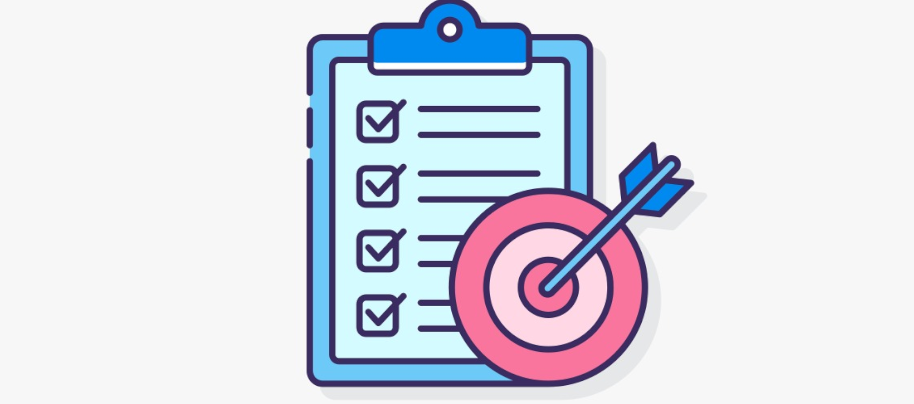

ISO/IEC 27001

Objetivo
A ISO/IEC 27001 é uma norma internacional que define os requisitos para a implementação de um Sistema de Gestão de Segurança da Informação (SGSI), com o objetivo de proteger a confidencialidade, integridade e disponibilidade das informações de uma organização.
Visão Geral da Norma
A ISO/IEC 27001 estabelece as diretrizes para criar, implementar, manter e melhorar um SGSI eficaz. Ela é aplicada a qualquer tipo de organização, independentemente do tamanho ou setor, com foco na proteção dos ativos de informação, garantindo que dados sensíveis sejam protegidos contra riscos como falhas, ataques cibernéticos e acessos não autorizados.
Requisitos Principais da ISO/IEC 27001
Estabelecimento de um SGSI: A norma exige a implementação de políticas e controles específicos para a gestão da segurança da informação. A organização deve avaliar riscos e determinar os controles necessários para mitigá-los.Gestão de Riscos: A organização deve identificar, avaliar e tratar riscos associados à segurança da informação. A avaliação contínua dos riscos é parte integral do processo.
Melhoria Contínua (Ciclo PDCA): A norma adota o ciclo *Plan-Do-Check-Act (PDCA)* para garantir que o SGSI seja constantemente monitorado, revisado e aprimorado. Isso permite a adaptação às mudanças no ambiente e no cenário de ameaças.
Auditorias e Monitoramento: Auditorias internas e externas são necessárias para verificar a eficácia do SGSI e garantir conformidade com os requisitos da norma.
Processo de Implementação
Planejamento:Identificação de riscos e definição de controles para proteger as informações. Estabelecimento de políticas e objetivos relacionados à segurança da informação.Implementação:Execução das políticas de segurança, treinamento de funcionários e instalação de medidas de proteção. Além disso, a implementação de processos de monitoramento é fundamental.
Avaliação:Realização de auditorias internas para verificar a conformidade e eficácia do SGSI. A avaliação deve também envolver a análise de incidentes e o feedback dos usuários.
Ação Corretiva:Quando problemas são identificados, devem ser tomadas ações corretivas para melhorar os controles e processos, conforme o ciclo PDCA.
Benefícios da ISO/IEC 27001
Redução de Riscos:Ajuda a identificar e minimizar riscos associados à segurança da informação.Conformidade Legal:Garante que a organização cumpra com regulamentos e leis relacionadas à proteção de dados (ex: LGPD, GDPR).
Confiança do Cliente:A certificação ISO/IEC 27001 aumenta a confiança de clientes e parceiros, demonstrando compromisso com a segurança.
Proteção de Dados Sensíveis:Impede vazamentos de dados e acessos não autorizados a informações críticas.
Melhoria da Imagem Corporativa:A certificação reconhecida internacionalmente aumenta a reputação da organização.
Certificação e Auditorias
Certificação:Organizações podem obter a certificação ISO/IEC 27001 por meio de auditorias externas realizadas por organismos acreditados. A certificação atesta a conformidade com os requisitos da norma e a eficácia do SGSI.Auditorias:A organização deve passar por auditorias periódicas para garantir que o SGSI continue eficaz e em conformidade com os padrões estabelecidos.

Conclusão
A ISO/IEC 27001 é essencial para organizações que buscam garantir a segurança das informações e mitigar riscos relacionados a dados sensíveis.A norma oferece uma abordagem sistemática para gerenciar a segurança da informação, alinhando as políticas de segurança aos objetivos estratégicos da organização.
A obtenção da certificação demonstra o compromisso da organização com a proteção de dados e fortalece a confiança de clientes e parceiros.